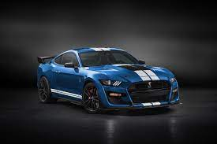
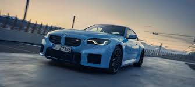

<!DOCTYPE html>
<html lang="en">
<head>
    <meta charset="UTF-8">
    <meta name="viewport" content="width=device-width, initial-scale=1.0">
    <title>Document</title>
</head>
<body>
    <style>
    h1 {text-align: center;}
    h2 {text-align: center;}
    header {
      background-color: #333;
      color: #fff;
      padding: 1px;
    }
    header{
      background-color: #110d0d;
      color: #faf7f7;
      padding: 1px;
    }
    header1{
      background-color: #110d0d;
      color: #faf7f7;
      padding: 1px;
    }
    main {
      padding: 10px;
    }
    img {
      max-width: 100%;
      height: auto;
    }
    </style>
</body>
</html>
<header>
    <h1>Welcome to my Page</h1>
   <h1><nav>
        <a href="#">Home</a> |
        <a href="#">About</a> |
        <a href="#">Contact</a>
      </nav>
   </h1>
</header>
<main>
    <h2><h2>My Favourite Car</h2>
    <header>
        <ol >
            <li>MUSTANG</li>
        </ol>
    </header><br>

<ul style="list-style-type:circle;">
    <li>Ford Mustang GT Fastback 5.0L v8 is the top model in the Mustang lineup and the price of Mustang top model is Rs. 74.61 Lakh. It gives a mileage of 7.9 kmpl. Ford Mustang GT Fastback 5.0L v8 is available in Automatic transmission and offered in 6 colours: Absolute Black</li>
  </ul>  
</header><br>
<header>
    <ol>
        <li>BMW</li>
    </ol>
</header><br>
<br>
<ul style="list-style-type:circle;">
    <li> 
        Bayerische Motoren Werke AG, abbreviated as BMW (German pronunciation: [ˌbeːʔɛmˈveː] (listen)), is a German multinational manufacturer of luxury vehicles and motorcycles headquartered in Munich, Bavaria, Germany. The company was founded in 1916 as manufacturer of aircraft engines, which it produced from 1917 to 1918 and again from 1933 to 1945.
    </li>
</ul>
   </main>
   
